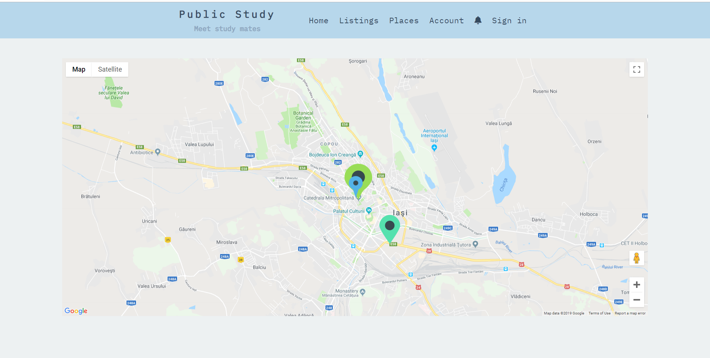
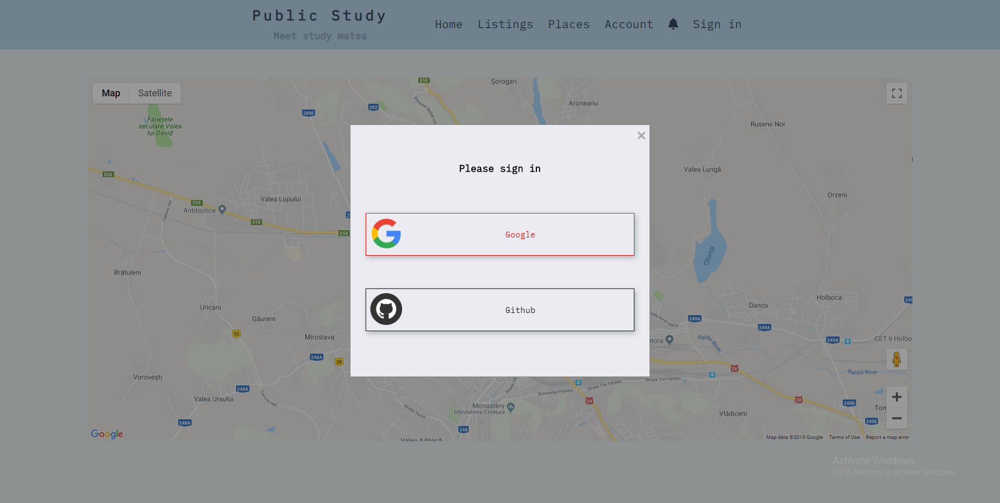
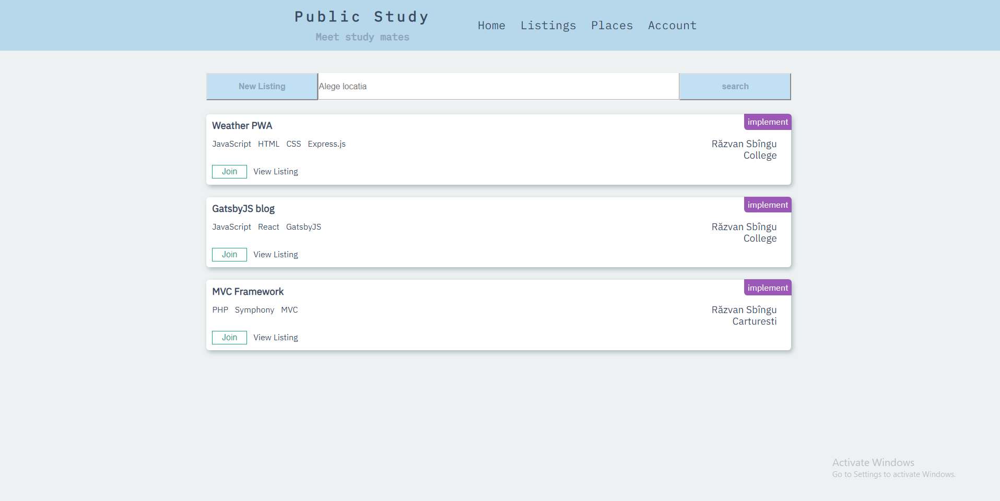
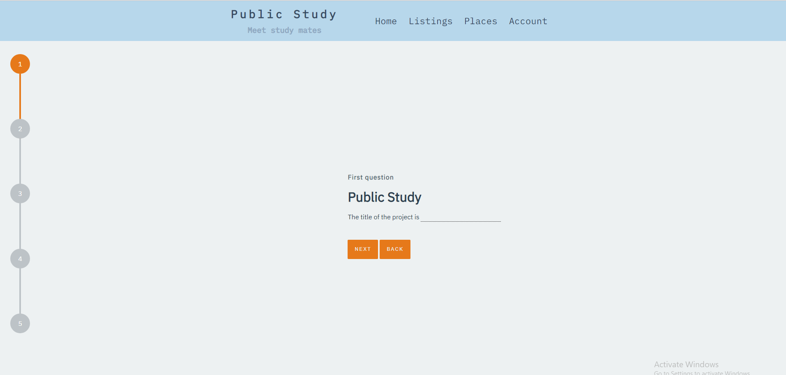
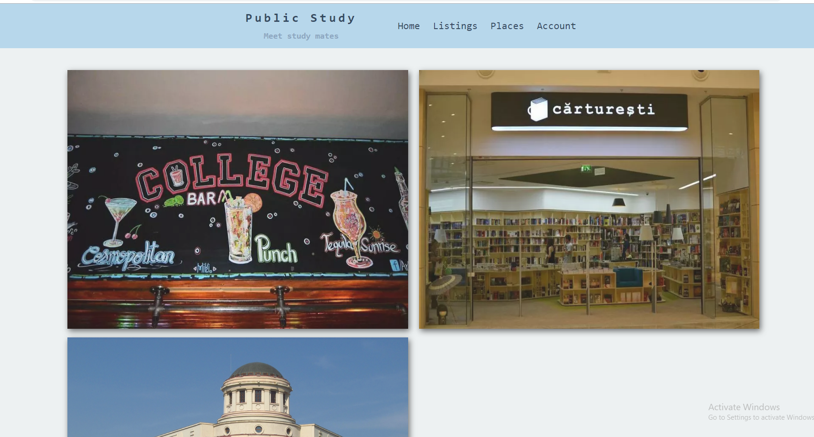
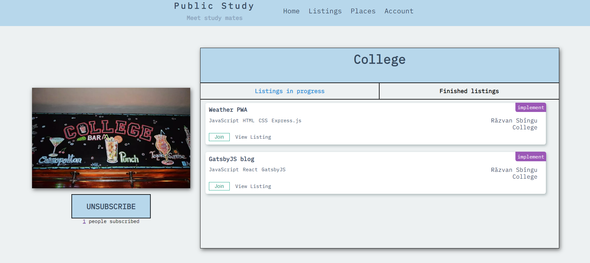

A PWA (Progressive Web App) meant to stimulate interaction between the people that study/work in local public places (e.g. libraries, cafes or co-working spaces).
On the first page you will be greeded with a map containing the most popular places in our application.
The bigger the marker the more popular is that place.

If you want to use our app, your must first log in thru google or github.

After you log in you will be redirect to the account page, where you can add
your skills.
Our application is based around listings. A listing is an invitation to study.
If you enter the listings page, the application will request your geolocation.
If you accept to share it, on the page will appear the listings that are the closest
to you, if you don't accept on the page will appear the listings that match your skills. If you want
something more specific you can search by the location.

If you want too a listing of your own, you can do that by pressing the add listing button.
First you will be asked if you want to study or the implement something. Then you will have
to answer some short questions regarding your location, the subject you want to adress and so on.

If anybody wants to join your listing, you will receive a notifcation and you can accept or decline from
the account page.
On the listing page you can read more details about that listing and if you are accepted on that listing
you can write comments and participate in the process of studying.
In the places page you can see every location that is supported by our application.

Every place has it's own page in which you can see the listings opened in that place or you
can subscribe to that place. If you subscribe, you will be notified every time a listing that
requires your skills was opened in that place.
